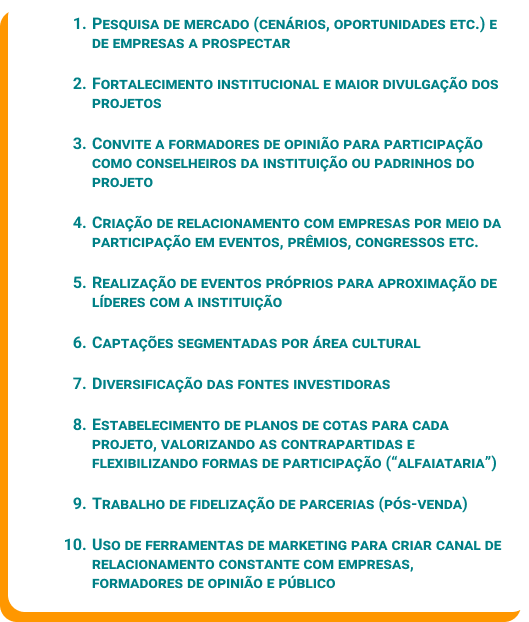
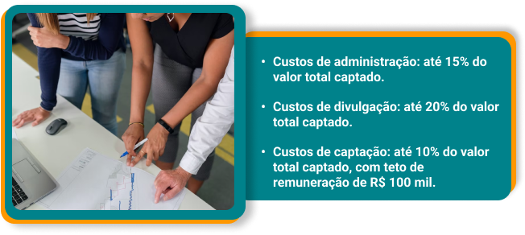
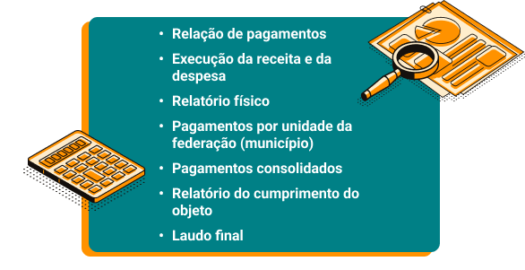
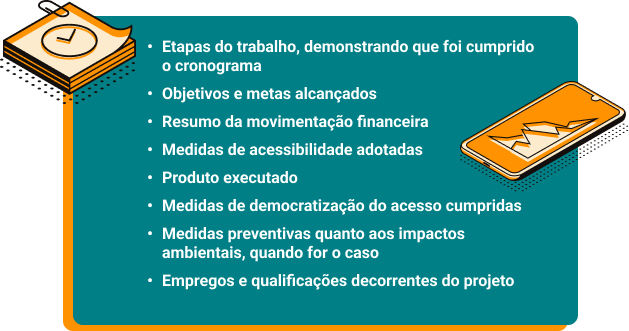

“Costurar” é algo que as pessoas fazem o tempo todo. Não se trata, necessariamente, daquela costura feita com linha e agulha, unindo um pedaço de tecido ao outro. Ainda que essa forma de costura esteja presente em cada peça de roupa, a analogia que se quer fazer nesse caso se refere ao próprio ato de ligar uma coisa à outra, isto é, ligar um conhecimento ao outro.
Conectar conhecimentos é fundamental para aprender, e, ao longo desta segunda etapa da sua jornada, o foco estará em conectar (“costurar”) os conhecimentos relativos à produção cultural ao dia a dia do trabalho do produtor, para que os conceitos trabalhados ganhem sentido prático.
Então, serão discutidos ferramentas de trabalho do produtor cultural, cronogramas, planos, orçamentos, planilhas, tabelas, com o objetivo de fazer um convite a você, caro estudante: aprenda as ferramentas apresentadas, guarde-as na sua “caixinha de costuras” e utilize-as para “costurar” projetos movidos pela sua criatividade e pela cultura da sua comunidade.
Seguindo os estudos de produção cultural, você viu a importância de organizar e elaborar projetos, seja para fins de financiamentos coletivos, como para inscrição em editais e prêmios, seja para se ter um “mapa” de navegação que auxiliará na hora da feitura do produto ou do serviço cultural. Então, chegou a hora de elaborar projetos que visam a captar recursos financeiros via leis de incentivo à cultura (LICs).
Antes, porém, é importante recapitular duas questões:
O que são as leis de incentivo à cultura?
Quais são as leis de incentivo à cultura disponíveis no país?
Você lembra o que viu no módulo Fomento à cultura, da etapa 1, sobre as leis de incentivo à cultura? Elas operam nos mecanismos de financiamento cultural instituídos pela Lei nº 8.313/1991 (Lei Rouanet), por meio de renúncia fiscal.
As leis de incentivo à cultura são mecanismos, ferramentas e/ou iniciativas criados para apoiar, difundir e valorizar a cultura brasileira e as suas diferentes expressões e linguagens artísticas, facilitando e assegurando o acesso da sociedade aos bens e aos serviços culturais. Tais leis estão presentes nas esferas federal, estadual e municipal.
Considerando o campo municipal, é possível exemplificar algumas leis de incentivo à cultura, tais como: em Curitiba, a Lei Complementar nº 57/2005, que cria o Programa de Apoio e Incentivo à Cultura (PAIC) e o Fundo Municipal de Cultura (FMC) (CURITIBA, 2005); em São Paulo, a Lei nº 15.948/2013, que institui o Programa Municipal de Apoio a Projetos Culturais (PRO-MAC) (SÃO PAULO, 2013); em Belo Horizonte, a Lei Municipal nº 11.010/2016, que institui políticas de fomento à cultura no município, como o Plano Bianual de Financiamento à Cultura, o Fundo Municipal de Cultura e o incentivo fiscal (BELO HORIZONTE, 2016).
No âmbito municipal, a renúncia fiscal funciona por meio do Imposto Predial e Territorial Urbano (IPTU) e do Imposto sobre Serviços (ISS), ou seja, o município destina parte dos valores desses impostos para o fomento e o financiamento cultural. Como diz a Lei Municipal nº 11.010/2016, o incentivo fiscal é um mecanismo por meio do qual o Município realiza a renúncia fiscal em favor do incentivador de projetos de caráter artístico-cultural na cidade (BELO HORIZONTE, 2016).
Observe algumas leis municipais de incentivo à cultura:
O âmbito estadual segue a mesma lógica do ente municipal, mas abrange um número maior de recursos e de trabalhadores da cultura. Como exemplo, podem ser mencionadas: a Lei nº 8.257/2004 do Mato Grosso, que institui o Fundo Estadual de Fomento à Cultura do Estado do Mato Grosso (MATO GROSSO, 2004); em São Paulo, a Lei Estadual nº 12.268/2006, que institui o Programa de Ação Cultural (ProAC); e, no Rio Grande do Sul, a Lei nº 13.490/2010, que institui o Sistema Estadual Unificado de Apoio e Fomento às Atividades Culturais (Pró-cultura).
Você sabe dizer se, na sua cidade ou no seu estado, existe alguma lei de incentivo à cultura? Para descobrir, consulte a secretaria de cultura do seu município ou do seu estado, identificando também quais são os mecanismos com os quais ela opera, estimula e fomenta o setor cultural da sua região.
Quanto ao campo federal, ele delimita as bases para as leis municipais e estaduais, merecendo destaque as seguintes leis:
Clique ou toque para visualizar o conteúdo.
Implementada na década de 1990, a Lei do Audiovisual (Lei nº 8.685/1993) é uma maneira de fomento ao cinema nacional. Além de tratar dos incentivos financeiros, ela inclui a cota de tela, que obriga as salas de cinemas a terem um percentual de obras nacionais em sua grade de filmes (BRASIL, 1993).
Talvez a mais conhecida das leis de incentivo à cultura no país, a Lei Rouanet será o foco deste módulo. A Lei nº 8.313/1991 (ou Lei Rouanet) instituiu o Programa Nacional de Apoio à Cultura (Pronac), que é uma forma de incentivo à cultura mediante a captação de recursos de pessoas físicas e jurídicas, por meio da renúncia fiscal (dedução no imposto de renda), para projetos culturais previamente aprovados pela Secretaria Especial da Cultura (BRASIL, 1991). O Pronac atua em três vias:
Assim, note que existem leis que regulamentam financiamentos e fomentos ao setor cultural, nos quais produtores culturais podem pleitear, informar-se e buscar constantemente “encaixar” seus projetos em algum mecanismo de lei de incentivo à cultura, seja municipal, seja estadual ou federal.
O foco, a partir deste ponto, será a Lei Rouanet como exemplo. Ela é uma lei que serve de base legal para a implementação de outras leis de incentivo à cultura dos demais entes federados (municípios, Distrito Federal e estados), bem como para a implementação de outros mecanismos possíveis para disponibilizar as verbas para as produções culturais.
Contudo, como visto, a Lei Rouanet tem a especificidade da captação de recursos financeiros para o projeto (via renúncia fiscal), o qual ocorre via submissão de projetos culturais na plataforma oficial do governo. Não se preocupe, pois essa plataforma será tratada mais adiante.
Antes, para ajudar a conectar os conhecimentos com a prática de elaborar e executar projetos para a Lei Rouanet, você pode conferir, no podcast a seguir, uma conversa com a produtora cultural Eliza Pierim. A entrevistada deu mais detalhes sobre sua rotina de trabalho como produtora cultural e falou sua opinião sobre a Lei Rouanet. Também comentou sobre a utilização da plataforma de submissão de projetos culturais, sobre a captação de financiamento de empresas e entes federados, entre outros.
Ouça o podcast com atenção, pois a Eliza trouxe dicas preciosas. Se preferir, leia a transcrição.
Como você pôde ver, existem diversas leis de incentivo à cultura no país, e todas elas operam de forma semelhante: a prefeitura, o governo do estado ou o governo federal abrem mão de parte dos impostos a serem pagos por empresas ou pessoas físicas e autorizam os produtores culturais a captarem tais recursos para seus projetos culturais.
Clique ou toque para visualizar o mapeamento de leis de incentivo à cultura estaduais e municipais ao redor do país.
Nem todas as leis existentes estão aqui. O objetivo é dar uma dimensão nacional desses mecanismos de fomento.
Que tal aprender ainda mais?
Para ampliar esse mapeamento, pesquise as leis de incentivo à cultura e os editais disponíveis na sua cidade e no seu estado. Envie o que você encontrar no fórum Ponto de cultura.
Até aqui, você viu o que são as leis de incentivo à cultura e exemplos de cada uma delas Brasil afora. Contudo, você deve estar se perguntando: “Como eu faço para inscrever um projeto baseado nessas leis?”.
Não será possível, neste módulo, abordar em detalhes cada uma das leis de incentivo existentes no país, então o foco será, como já dito, a Lei Rouanet, que está disponível em todo o Brasil.
Você verá a seguir uma série de detalhes importantes que o produtor cultural tem que conhecer no momento de captar recursos e de planejar, elaborar, aprovar e executar um projeto via Lei Rouanet. São diversos regulamentos, o que acaba complicando um pouco o processo. É complicado porque a Lei Rouanet tem muitos instrumentos de acompanhamento e controle para garantir que o dinheiro que o Estado deixa de receber está sendo bem investido em projetos culturais.
A expressão “bem investido”, no caso, significa que os recursos vão para projetos que apresentem retornos sociais importantes, que paguem aos profissionais envolvidos valores que não são altos nem baixos demais, que estimulem o desenvolvimento econômico e social nos locais onde são realizados.
Se você ficar com qualquer dúvida relativa ao caminho dos projetos culturais na Lei Rouanet ou se quiser conversar sobre outras leis de incentivo estaduais e municipais, envie uma mensagem no fórum Tira-dúvidas e continue a conversa por lá!
Após ver as especificidades da Lei Rouanet e das outras leis de incentivo municipais e estaduais, bem como ouvir o podcast com a produtora cultural Eliza Pierim, surge uma questão: como produtores culturais buscam recursos ou verbas pela Lei Rouanet?
A resposta é simples: por meio da plataforma oficial chamada de “Sistema de Apoio às Leis de Incentivo à Cultura” (Salic ou Salicweb).
Os projetos culturais são submetidos na plataforma Salic e devem conter diversas informações, tais como: orçamentos detalhados e plausíveis; sinopse e dados detalhados do projeto; plano de distribuição; localidades onde serão realizadas as ações do projeto; entre outros dados.
Algumas questões específicas da Lei Rouanet para submissão de projetos via Salic serão trabalhadas neste módulo. A lógica para elaboração do projeto cultural é a mesma que a vista anteriormente: o projeto deve ser bem organizado, contendo objeto, justificativa, objetivos, cronogramas, checklists, plano de comunicação, orçamentos.
Então, a primeira coisa a observar é o enquadramento do projeto, para delimitar as porcentagens de renúncia de imposto de renda dos patrocinadores ou dos apoiadores, que é o mecanismo de financiamento a que se destina a lei. Isso significa que o CPF (cadastro de pessoa física) ou o CNPJ (cadastro nacional da pessoa jurídica) que quer doar ou patrocinar valores para determinado projeto cultural pode abater do seu imposto de renda de 30% a 100% do valor total do orçamento de projetos culturais aprovados via Salic. Essas porcentagens de abatimento do imposto de renda dependem do enquadramento da natureza do projeto cultural fomentado, descrito nos artigos 18 e 26 da Lei Rouanet.
As naturezas culturais descritas no artigo 18 abatem 100% do valor doado ou patrocinado do imposto de renda da empresa ou da pessoa. Já as descritas no artigo 26 abatem entre 30% a 70% do valor.
Por exemplo: se uma empresa doa ou patrocina, via Lei Rouanet, um montante de R$ 30 mil a um projeto cultural que se enquadra no artigo 18, o valor integral de R$ 30 mil é abatido do imposto de renda dessa empresa.
Logo, é importante ter em mente que o projeto pode ser enquadrado em um desses dois artigos (18 e 26), e quem faz esse processo de enquadramento é a Secretaria Especial da Cultura, baseada na submissão do projeto na plataforma Salic. É preciso atentar ainda às naturezas culturais citadas no artigo 18 (BRASIL, 1991):

Os projetos culturais que não estiverem enquadrados nesses itens entram nas porcentagens de abatimento e nas regras do artigo 26 da Lei Rouanet. Veja quem pode doar ou patrocinar valores para projetos culturais, assim como as porcentagens máximas possíveis:
| Pessoa física | Pessoa jurídica |
|---|---|
| Quem declara imposto de renda em modelo completo | Empresa optante pelo sistema tributário de lucro real |
| Pode destinar até 6% do imposto de renda devido | Pode destinar até 4% do imposto de renda devido |
Então, com base nessas informações, é preciso entrar na plataforma Salic, que é uma plataforma on-line na qual o produtor cultural se cadastra como pessoa física, informando dados como CPF, endereço, e-mail, e se torna a pessoa “usuário” da plataforma. Esse usuário, então, logo no início do seu cadastro, deve indicar o proponente do projeto (podendo ser pessoa física ou jurídica).
Cada proponente, dependendo da sua natureza econômica, pode incluir um número determinado de projetos, assim como deve se ater a um limite de orçamento geral dos seus projetos. Esse limite deve ser observado sempre nas instruções normativas da Secretaria Especial da Cultura. Atualmente, a Instrução Normativa nº 1/2022 (última atualização) estabelece os limites de projetos por proponente:
| Proponente | Instrução Normativa nº 1/2022 |
|---|---|
| Pessoa física ou microempreendedor individual (MEI) | Até dois projetos ativos na plataforma Salic, totalizando R$ 1 milhão |
| Empresa individual de responsabilidade limitada (Eireli) | Até cinco projetos ativos na plataforma Salic, totalizando R$ 4 milhões |
| Sociedade limitada e demais pessoas jurídicas | Até oito projetos ativos na plataforma Salic, totalizando R$ 6 milhões |
Logo após indicar o proponente e a sua natureza econômica, tem-se a primeira aba a optar, que é relativa à tipicidade do projeto cultural. Trata-se de um campo que é obrigatório e que prevê limites de valores do orçamento geral dos projetos propostos a partir do tipo de projeto proposto.
| Tipo | Natureza cultural do projeto | Limite geral de orçamento |
|---|---|---|
| Normal | Qualquer natureza | Até R$ 500 mil |
| Singular | Desfiles festivos; eventos literários; exposições de artes; festivais. | Até R$ 4 milhões |
| Específico | Concertos sinfônicos; datas comemorativas nacionais com calendários específicos, tais como carnaval, festa junina, Natal etc.; ações educativas em geral e de capacitação cultural; inclusão de pessoas com deficiência; museus e memória; óperas; projetos de bienais; projetos de internacionalização da cultura brasileira; teatro musical. | Até R$ 6 milhões |
| Especial | Conservação, construção e implantação de equipamentos culturais de reconhecido valor cultural pela respectiva área técnica da Secretaria Especial da Cultura; patrimônio cultural tombado ou registrado no Instituto do Patrimônio Histórico e Artístico Nacional (Iphan); plano anual de atividades culturais. | Sem limites |
É importante ressaltar que o proponente dos projetos culturais submetidos na plataforma Selic deve comprovar experiência na área cultural, além de ter sua CNAE principal como de natureza exclusivamente cultural.
Portanto, caro estudante, até este ponto o produtor cultural cadastrou um proponente do projeto e selecionou o tipo de projeto que será submetido na plataforma Salic. A partir daqui, começa a fase de inscrição e elaboração do projeto para submissão.
A apresentação de projetos culturais para a Lei Rouanet é feita total e exclusivamente via Internet, na plataforma Salic, que fica ativa 24 horas por dia. Porém, fique atento: o prazo para submeter projetos culturais para análise é de 1º de fevereiro a 30 de novembro de cada ano.
Antes de partir para a inscrição e a elaboração do projeto para submissão via Salic, é preciso estar atento à leitura da lei e das orientações atualizadas. Lembre-se de que, para propor um projeto de acordo com a Lei Rouanet, deve-se sempre estar informado sobre as instruções normativas atualizadas (a última publicada pela Secretaria Especial da Cultura), pois elas remodelam os procedimentos de apresentação, recebimento, análise, homologação, execução, acompanhamento, prestação de contas e avaliação de resultados dos projetos culturais apresentados à Secretaria Especial da Cultura com vistas à obtenção de recursos financeiros do mecanismo de incentivo a projetos culturais do Pronac.
Também é preciso saber o caminho da análise de projetos submetidos, feita pela Secretaria Especial da Cultura, para saber em qual fase o seu projeto se encontra.
Clique ou toque para visualizar o fluxo da análise de projeto via Salic:
O exame preliminar de admissibilidade refere-se à análise formal que verifica se o projeto atende a todos os regulamentos da lei e se as documentações estão corretas e completas.
A análise das informações e de enquadramentos refere-se à análise dos dados do projeto a fim de enquadramentos nos artigos 18 ou 26, bem como à análise de outras informações, como medidas de acessibilidade, democratização de acesso, contrapartidas sociais etc. Estando tudo correto, o projeto ganha um número que vai identificá-lo durante todo o restante do processo até a fase de prestação de contas (o Pronac), o qual é a identidade do projeto dentro da plataforma Salic.
Após a análise e o enquadramento pela CNIC, é publicada a aprovação preliminar do projeto no Diário Oficial da União, e são abertas, pela Secretaria Especial da Cultura, contas bancárias, exclusivamente no Banco do Brasil, para movimentação financeira do projeto.
Nesse momento, o proponente deve se encaminhar a uma agência do banco para regularizar a conta do projeto, fornecendo a documentação necessária exigida pela instituição financeira e, aí sim, podendo começar a captação de recursos por CPFs ou CNPJs.
Após captar 10% do valor total do orçamento, o projeto é enviado para pareceristas especializados da Secretaria Especial da Cultura, dependendo do segmento cultural do projeto, ou seja, um espetáculo de teatro será analisado por alguém do teatro, um show será analisado por um parecerista de música, e assim por diante. Pode ser pedida alguma adequação no projeto, e, posteriormente, haverá um parecer de homologação de execução, no qual o projeto é submetido à CNIC e liberado para início da execução.
Portanto, para inscrição e elaboração de um projeto na plataforma Salic, é utilizada a lógica de modelagem e estruturação de projeto cultural, vista nos módulos anteriores. Porém, como o envio do projeto é totalmente eletrônico via plataforma, o processo segue uma lógica de preenchimento de campos e abas e upload de arquivos.
A primeira parte da inscrição consiste em assinalar o proponente e dar um nome (identificável) para o projeto, para depois seguir com o preenchimento dos “detalhes técnicos” do projeto dentro da plataforma Salic.
Basicamente, trata-se do preenchimento do cronograma do projeto, o qual é dividido em três etapas de produção: pré-produção, produção e pós-produção. Esse cronograma é destinado a entender o tempo de cada etapa. Por isso, não é preciso definir datas, mas, sim, o período que cada etapa durará e as principais atividades ou ações que serão realizadas em cada etapa. Confira um exemplo:
| Etapa | Pré-produção | Produção | Pós-produção |
|---|---|---|---|
| Período | 2 meses | 6 meses | 2 meses |
| Atividades/ações | Contato com patrocinadores; definição de equipe; elaboração de plano de divulgação; contratação de assessoria de imprensa etc. | Pagamento da equipe técnica e artística; compra e aluguel de materiais; montagem do palco do evento; apresentação do show ou do espetáculo etc. | Apresentação de resultados para patrocinadores; organização dos registros e das notas fiscais de pagamentos e aluguéis; elaboração de relatórios de execução; avaliação de resultados; finalização e entrega da prestação de contas à Secretaria Especial da Cultura etc. |
Em seguida, será pedida a ficha técnica, na qual devem ser indicadas as pessoas que trabalharão no projeto, as funções destas, além de um breve currículo. Aliás, tenha atenção: como esse campo tem caracteres limitados, utilize no máximo cinco linhas para cada “breve currículo” e foque as experiências mais recentes e relevantes para o projeto, que atestem a capacidade técnica da equipe e do proponente. O proponente deve evidenciar, na sua função e no seu currículo, que é gestor do projeto, podendo ser remunerado por isso.
Os currículos devem focar as funções que serão exercidas no projeto e, se possível, minimizar ao máximo a concentração de funções em apenas uma pessoa.
Depois, é preenchido o campo de sinopse da obra com uma descrição do objeto cultural. Também é indicado sinalizar nesse campo a classificação indicativa da obra, ou seja, a idade do público a que ela se destina.
Veja um exemplo adaptado do espetáculo E.L.A:
Projeto cultural: espetáculo teatral E.L.A
No solo, a atriz Jéssica Teixeira investiga cenicamente seu próprio corpo - inquieto, estranho e disforme - e questiona de que forma ele interage com o mundo. Assumindo a personalidade “ela”, em contraponto a seu corpo (“ele”), Jéssica faz de seu físico uma ferramenta multifacetada (ética, política, estética), que desestabiliza e potencializa outros corpos e olhares, buscando uma visão sensível sobre a diversidade e a multiplicidade, além de uma crítica à imposição de padrões de beleza. A artista se apoia em textos teóricos (como o livro O Corpo Impossível, da pesquisadora Eliane Robert Moraes) e na sua própria biografia para criar, em cena, um misto de depoimento e cenas performáticas. É possível ver, nesse trânsito narrativo, seu corpo transformar-se em muitos: da diva pop ao ciborgue, até libertar-se de amarras e “desembocar” na selvageria.
Classificação indicativa: 14 anos.
Ainda há as abas de especificações técnicas do produto, nas quais deve ser descrito, tecnicamente, o que será realizado como produto cultural, por exemplo: o plano pedagógico para oficinas e cursos, os materiais usados em obras de arte visuais ou performance, a descrição técnica para confecção de um CD (compact disc) ou um DVD (digital video disc).
Também será pedida a descrição da atividade do produto. Esse campo deve conter os detalhes da atividade cultural prevista que ainda não foram inseridos nos itens anteriores. Também deve conter detalhes e descrições da contrapartida social, da democratização cultural e da acessibilidade – itens obrigatórios para projetos financiados pela Lei Rouanet.
Em seguida, ainda na plataforma Salic, está o campo de outras informações, que não é obrigatório, mas auxilia a detalhar melhor algo no projeto que não foi contemplado nos campos anteriores e que você avalia como importante para o entendimento da avaliação do projeto.
Após, a aba de local de realização só tem dois campos a serem preenchidos: “local de realização” e “deslocamento” (para projetos de circulação de projetos culturais). Ao selecionar o item “local de realização”, basta selecionar depois qual(is) é(são) o(s) estado(s) e qual(is) é(são) a(s) cidade(s) onde o projeto será realizado (ou ainda qual é o país, para projetos com apresentação internacional). Deve ser incluída a cidade-sede do proponente, mesmo que o projeto não seja realizado nela, pois alguns gastos administrativos serão localizados com o proponente.
Seguindo o fluxo da plataforma, o plano de distribuição é mais um campo obrigatório. Esse campo deve descrever em detalhes a quantidade de ingressos ou produtos culturais que serão distribuídos ou comercializados pelo projeto. Fique atento à instrução normativa vigente, pois ela delimita as cotas máximas e mínimas de distribuição de ingressos, produtos ou serviços. Veja o que diz a Instrução Normativa nº 1/2022:
a) no mínimo de vinte por cento para distribuição gratuita com caráter social, educativo ou formação artística, sendo o proponente responsável pela disponibilização do transporte e em toda distribuição gratuita de ingresso na bilheteria deverá divulgar dia e hora marcados;
b) até dez por cento para distribuição gratuita entre incentivadores, patrocinadores e doadores [...];
[...]
d) até dez por cento para distribuição gratuita promocional pelo proponente;
e) mínimo de dez por cento para comercialização em valores que não ultrapassem o valor do Vale-Cultura [R$ 50,00] [...];
[...]
g) a comercialização em valores a critério do proponente será limitada a cinquenta por cento do quantitativo de produtos culturais, sendo o preço médio do ingresso ou produto limitado ao valor máximo de R$ 250,00 (duzentos reais). (BRASIL, 2022)
Nessa parte, também será selecionado o tipo de produto cultural que o projeto realizará e serão detalhadas as distribuições em razão dos locais de realização cadastrados, ou seja, a quantidade de eventos, produtos ou serviços culturais em cada cidade ou estado e os valores dos ingressos ou dos exemplares de produtos ou serviços, cuidando para o valor médio não ultrapassar R$ 250,00.
Fique atento aos produtos listados na plataforma no campo do plano de distribuição e selecione aquele no qual seu projeto cultural se enquadra, pois essa seleção terá como consequência os enquadramentos nos artigos 18 e 26, tratados no início deste módulo.
Continuando a inscrição na plataforma Salic, os documentos que devem ser inseridos na plataforma são divididos em duas categorias: proponente e projeto. Para estar sempre atualizado, é importante atentar ao anexo IV das instruções normativas da Secretaria Especial da Cultura, as quais são atualizadas anualmente. Nelas constarão as documentações exigidas atualizadas para projetos culturais que buscam recursos via Lei Rouanet.
A última parte a se atentar é o orçamento do projeto, e na própria plataforma há modelos para orçamentos. Em orçamento do projeto, você terá três opções: “custos vinculados/remuneração”, “custos por produtos” e “visualizar planilha de orçamento”. Aqui se opta também por uma das tipicidades: singular, específica ou especial, as quais delimitarão os valores máximos do projeto cultural, como visto anteriormente.
Na opção de custos vinculados, há opções para destinar percentuais gerais para: custos de administração (15% do valor total) – pagamento de pessoas administrativas, aluguel de sala e compra de materiais de escritório; custos de divulgação (20%) – todo material de divulgação, assim como profissionais que trabalharão na divulgação, como designer gráfico e assessoria de imprensa; e remuneração para captação de recursos (10%) – profissional que captará recursos com empresas e pessoa física, com teto de remuneração de R$ 100 mil. Os cálculos dessas porcentagens são feitos automaticamente pelo sistema, e os percentuais são padronizados no valor máximo que a lei dispõe, podendo ser diminuído.
Já na opção de custos por produtos, é hora de detalhar os custos e as atividades de cada produto cultural cadastrado e as localidades (cadastradas em “local de realização”) com relação às etapas de produção (pré-produção, produção e pós-produção), assim como assessoria contábil e recolhimento de impostos. Fique tranquilo, pois o sistema apresenta rubricas, itens, unidades, quantidades, fonte de recurso, e os cálculos são automáticos para cada inserção.
Para finalizar, na opção de visualizar planilha de orçamento, você tem acesso à planilha completa com todas as inserções orçamentárias. É importante prestar muita atenção ao cálculo per capita antes de submeter o orçamento na plataforma Salic, pois o custo per capita estipulado por lei tem um limite de R$ 250,00, ou seja, você deve considerar o total do orçamento e dividi-lo pelo número de pessoas que terão acesso ao seu produto ou ao seu serviço cultural. O resultado desse cálculo deve ser igual ou inferior ao limite de R$ 250,00. Caso o valor seja superior, revise os itens do orçamento e baixe o valor total do projeto.
Assim, inserindo todos os dados, os documentos, os planos e o orçamento, o projeto passará para a etapa de avaliação de admissibilidade, depois para a etapa de enquadramentos e, por fim, para a etapa de aprovação preliminar e publicação no Diário Oficial da União, liberando o projeto cultural a captar recursos.
O item de medidas de acessibilidade e democratização de acesso é obrigatório e deve sempre ser previsto.
Confira a seguir um passo a passo do processo de inscrição de um projeto cultural na plataforma Salic:
Clique ou toque nas setas para visualizar o conteúdo.
Com o projeto homologado e publicado no Diário Oficial da União e com as contas no Banco do Brasil abertas, chegou o momento de captar recursos para o projeto. A captação de recursos consiste em um processo de venda do projeto. Após a aprovação do projeto, o produtor faz um resumo deste, elabora uma apresentação comercial para possíveis patrocinadores e a entrega a um profissional de captação, como visto no podcast com a produtora Eliza Pierim.
Geralmente, existe uma plataforma para o produtor acessar e preencher os dados solicitados. Nessa etapa, além da apresentação do projeto, são explicitados sua relevância, suas contrapartidas sociais e seu retorno para o patrocinador. O produtor, com o captador, cria estratégias para encantar e convencer as empresas a se tornarem patrocinadoras do projeto cultural. Aliás, lembre-se de que profissionais contratados para esse fim (com CNAE específica para a função) têm a remuneração limitada a R$ 100 mil.
Relembrando a conversa com a produtora Eliza no podcast, o captador faz um plano de retorno de mídia e financeiro, no qual evidencia a marca da empresa impressa em todos os materiais físicos e digitais do projeto e estabelece cotas (de até 10%) de ingressos ou do produto cultural que a empresa pode acessar. Dessa forma, o patrocinador pode proporcionar aos seus funcionários a participação nos eventos culturais.
Existem, assim, algumas estratégias de captação:
Portanto, a fase de captação é o momento de buscar recursos financeiros com empresas e CPFs. Atingindo 20% do valor total do orçamento do projeto, dá-se início à fase de execução.
Pensando na execução do projeto cultural aprovado via Salic (Lei Rouanet), a gestão da execução do projeto é responsabilidade do proponente, sendo o aceite assinado digitalmente via plataforma, na declaração de responsabilidade, no momento da inscrição do projeto. Inclusive, toda comunicação oficial do proponente com a Secretaria Especial da Cultura se faz via plataforma Salic. Por isso, é importante, durante toda a execução, manter os dados do proponente atualizados no sistema, como telefone, e-mail e endereço.
O proponente deve ter em mente que, durante toda a execução do projeto, tudo que foi feito deve ser registrado, por exemplo: pagamentos, transferências, estruturas montadas para o evento, contrapartidas sociais, distribuição e divulgação, matérias de jornais, publicações em redes sociais etc.
Esses registros podem ser feitos mediante notas fiscais, fotografias, vídeos, comprovantes, listas de presença (borderô), recibos, recortes de jornais, prints de sites e redes sociais etc. Afinal, todas as propostas de atividades, serviços ou bens de projetos incentivados via Lei Rouanet são públicas, realizadas com verbas públicas, então tudo deve ser comprovado com evidências.
Então, após a aprovação do projeto, a Secretaria Especial da Cultura abrirá dois tipos de conta para o projeto: conta de captação e conta de movimentação. A conta de captação destina-se exclusivamente ao recolhimento dos recursos captados com empresas e pessoas físicas, ou seja, é uma conta em que não pode haver movimentos como saque, transferência bancária, pagamentos de serviços etc. Para conseguir movimentar os recursos e iniciar a execução do projeto, é necessário que haja captação de no mínimo 20% do orçamento total do projeto.
Desse modo, assim que o mínimo é cumprido, o proponente terá a liberação da conta de movimentação. Somente após essa liberação o proponente poderá realizar pagamentos, comprar materiais e, se necessário, solicitar alterações no projeto.
É nesse momento, inclusive, que podem ser feitos a complementação ou a redução do valor do projeto, os pedidos de prorrogação, a avaliação dos fornecedores, a formalização de contratos, a identificação das formas de pagamento, a certificação dos meios de acessibilidade e de democratização do acesso etc. Também é permitida a alteração de até 50% no orçamento.
Não esqueça: na execução do projeto, a aquisição de material permanente deve conter três orçamentos, de três fornecedores diferentes, e o escolhido deve ser aquele que apresentar maior economicidade, ou seja, o mais barato.
A fase de execução também é o momento de prestar atenção aos limites percentuais observados em custos vinculados em relação ao montante captado. Você se lembra dos custos vinculados? Veja:
Assim sendo, no momento da execução do projeto, é preciso atualizar os valores do orçamento em função dos valores captados.
Como exemplo, suponha um projeto que foi aprovado na plataforma Salic com orçamento total de R$ 50 mil, mas com montante captado de 80% desse valor, ou seja, R$ 40 mil:
| Custos administrativos = 15% | R$ 6.000,00 |
| Custos de divulgação = 20% | R$ 8.000,00 |
| Custos de captação = 10% | R$ 4.000,00 |
Isso significa que, no momento da execução de projetos vinculados à plataforma Salic, é preciso estar atento às responsabilidades do proponente e atualizado sobre as legislações municipais, estaduais e federal, as leis trabalhistas e o recolhimento de impostos. Também é necessário atualizar os orçamentos do projeto em função dos valores captados.
Esse acompanhamento tem uma dupla função: por um lado, a transparência da movimentação financeira de recursos públicos (afinal, os valores disponíveis nas contas do proponente são de origem pública, oriundos da renúncia fiscal de empresas e pessoas físicas); e, por outro, a composição dos materiais para a prestação de contas e para a avaliação do projeto. Portanto, toda mudança ocorrida no percurso da execução do projeto deve ser comunicada e solicitada via Salic, só podendo haver alterações mediante aprovação, sejam de orçamentos, sejam de localidades, fornecedores etc.
Dessa maneira, na fase de execução, o proponente assume a postura de gestor dos recursos, de mediador da comunicação com o governo e de prestador de justificativas solicitadas por pareceristas técnicos – em alguns casos, pode acontecer de haver fiscalização presencial de técnicos da Secretaria Especial da Cultura, como visto no podcast com a produtora Eliza Pierim.
A gestão de projeto nada mais é do que a administração do projeto cultural como um todo, ou seja, compreende seu desenvolvimento e sua execução. Sendo assim, abrange desde o seu planejamento até a sua pós-produção, a sua desmontagem ou a sua renovação. Falar em gestão é pensar em uma administração sistematizada, organizada e focada em resultados.
É comum pensar que a prestação de contas deve ser feita somente quando o projeto já está finalizado, mas é mais fácil e melhor organizar a prestação durante a execução do projeto. Fazer esse movimento é uma forma de melhorar a sua organização documental e financeira.
O proponente tem até 60 dias após o término da execução do projeto para apresentar a prestação de contas. Por isso, é essencial guardar todos os extratos bancários, nomeados pelo mês, pois eles serão importantes nessa apresentação. Existem quatro tipos de extrato com os quais você terá contato: extrato de conta-corrente da conta de captação; extrato de rendimentos sobre aplicações financeiras da conta de captação; extrato de conta-corrente da conta de movimentação; e extrato de rendimentos da conta de movimentação.
Todos os pagamentos devem ser feitos mediante a emissão de documentos fiscais válidos pelo fornecedor, mas alguns tipos de pagamento podem ser comprovados com recibos. Para saber mais detalhes sobre o que é necessário apresentar na prestação de contas, basta consultar os artigos 47 e 48. Esses documentos são a comprovação da realização de todo o projeto.
Quanto à aquisição de materiais permanentes, é necessário fazer uma cotação com no mínimo três fornecedores, a fim de assegurar que a escolha foi feita de forma impessoal e moral. Na prestação, essas cotações deverão acompanhar os documentos de comprovação da despesa.
Entre as exigências feitas pela lei, está a contratação de um contador, o qual deve ter registro no conselho de classe. Essa contratação deve ser comprovada na prestação de contas.
Todas as despesas realizadas devem ser registradas na plataforma Salic logo após o pagamento de uma despesa relativa a algum dos itens orçamentários do projeto. Esse registro é feito na aba de comprovação financeira. A inclusão das despesas na plataforma Salic, à medida que for realizada, permitirá ao proponente fazer a gestão de todas as rubricas orçamentárias acompanhando os valores já utilizados e a utilizar.
Na aba de prestação de contas, o proponente encontrará as opções com os seguintes relatórios:
É no relatório do cumprimento do objeto que o proponente produzirá um texto comparando o que foi aprovado com o que foi cumprido. Trata-se do documento em que o proponente relatará detalhes de tudo que aconteceu durante a execução do projeto. Devem ser incluídas as seguintes informações:
Mesmo que você tenha enviado toda a documentação, é recomendado conservar todos os documentos originais pelo proponente pelo prazo de cinco anos, contados a partir do final da avaliação dos resultados.
Sobre as alterações no projeto, o projeto aprovado pode ser alterado durante sua execução desde que solicitado pelo proponente, por meio da plataforma Salic, com justificativa e apresentação de documentos para análise. A secretaria responsável tem 30 dias para analisar o pedido. É possível alterar o proponente, a ficha técnica, o cronograma, a agência bancária, as fontes de financiamento, o período de execução e o orçamento.
A alteração no orçamento é uma das mais recorrentes e pode ocorrer por diversos motivos. Entretanto, qualquer solicitação de alteração orçamentária deve apresentar, além da justificativa, a planilha orçamentária atualizada, o ajuste do plano de distribuição, o ajuste da democratização de acesso e da acessibilidade e o cronograma atualizado.
A prestação de contas também passa por uma verificação: aprovada, aprovada com ressalvas ou reprovada. A reprovação pode acontecer por diversos motivos: ausência de entrega da prestação de contas, não cumprimento do objeto, equívocos de ordem financeira etc. O documento comprobatório da realização do projeto (prestação de contas) deve ser inserido diretamente na plataforma Salic.
Clique ou toque para recapitular os caminhos do incentivo cultural via Lei Rouanet (SALIC..., 2020).
Ficou com alguma dúvida? Envie-a no fórum Tira-dúvidas. Você terá toda a ajuda que precisar!
As leis de incentivo à cultura, assim como a Lei do Audiovisual e a Lei Rouanet no âmbito federal, são importantes mecanismos de fomento à cultura e estão disponíveis em vários estados e municípios brasileiros.
Além disso, as leis de incentivo à cultura podem ser acessadas para realização de projetos culturais de diferentes tipos e tamanhos, cabendo ao produtor cultural compreender se elas podem ou não ser o mecanismo adequado para obter os recursos para seu projeto cultural.
Algo que se deve ter mente é que essas leis têm uma diferença fundamental em relação aos editais de fomento. Nos editais, quando o projeto é premiado, recebem-se diretamente os recursos para execução. Já no caso das leis de incentivo à cultura, a aprovação do projeto não garante o recurso, mas apenas a autorização para fazer a captação dos recursos com empresas. Isso significa que o produtor cultural terá que entrar em contato com as empresas para obter os recursos. Como disse Eliza Pierim, no podcast deste módulo, é preciso vender o projeto para a empresa patrocinadora.
Existem profissionais da produção cultural e até de outras áreas que se especializam em fazer essa captação de recursos, bem como profissionais especializados em elaborar projetos culturais.
Cada lei de incentivo à cultura tem regras e exigências próprias nos processos de inscrição de projetos e execução e prestação de contas. Este módulo focou a Lei Rouanet, por ela estar disponível para produtores culturais de todo o país, mas é importante que o produtor cultural conheça as leis disponíveis na sua cidade e no seu estado.
Leis de incentivo, editais de fomento, financiamento coletivo, entre outros, são ferramentas que permitem colocar em ação a criatividade e transformar ideias em projetos culturais. Porém, para utilizar essas ferramentas, é preciso entendê-las e saber usá-las.
Por exemplo, você pode utilizar uma faca para soltar um parafuso, mas é mais fácil utilizar uma chave de fenda, não é mesmo? A mesma premissa vale para o produtor cultural. Ele precisa conhecer os diferentes mecanismos de fomento e saber que existem diferenças na elaboração, na execução e na finalização de projetos culturais em cada mecanismo
Então, caro estudante, ao longo desta segunda etapa da sua jornada, você “costurou” conhecimentos relacionados, cada vez mais, à prática da produção cultural, tais como a elaboração e a execução de projetos culturais, de cronogramas, de orçamentos; editais; plano de comunicação; leis de incentivo; divulgação; entre outros.
Chegando, assim, ao fim de mais uma etapa, fica o convite a olhar para trás e ver o grande “tecido” que você “costurou” ao longo da sua jornada até aqui. Viu? Agora, olhe para a frente, para o que o aguarda na terceira parte da sua jornada: a execução de projetos culturais!
1º FLORIPA is Burning promove cultura ballroom em Florianópolis. Yasss, 3 nov. 2021. Disponível em: https://yasss.com.br/floripa-is-burning/. Acesso em: 28 set. 2021.
ACRE. Lei nº 2.312, de 25 de outubro de 2010. Institui o Sistema Estadual de Cultura do Acre, cria o Programa Estadual de Fomento e Incentivo à Cultura – PRECULT, cria o Fundo Estadual de Fomento à Cultura – FUNCULTURA, estabelece diretrizes para a Política Estadual de Cultura e dá outras providências. Acre: Assembleia Legislativa, 2010. Disponível em: http://www.al.ac.leg.br/leis/?p=8277. Acesso em: 13 out. 2022.
AGENDA. Escola Pernambucana de Circo, 15 set. 2022. Disponível em: https://www.escolapecirco.org.br/website/category/agenda/. Acesso em: 28 set. 2022.
AMAPÁ. Lei nº 0.777, de 14 de outubro de 2003. Dispõe sobre o incentivo fiscal para a realização de projetos culturais no âmbito do Estado do Amapá e dá outras providências. Amapá: Assembleia Legislativa, 2003. Disponível em: http://www.al.ap.gov.br/ver_texto_consolidado.php?iddocumento=17544. Acesso em: 13 out. 2022.
ASSOCIAÇÃO CULTURAL E DESPORTIVA ACREBRASIL CAPOEIRA. Acre, 22 ago. 2017. Facebook: acrebrasilcapoeira. Disponível em: https://www.facebook.com/acrebrasilcapoeira/photos/pb.100063948339463.-2207520000../1816161298639279/?type=3. Acesso em: 13 out. 2022.
BAHIA. Lei nº 7.015, de 9 de dezembro de 1996. Dispõe sobre a concessão de incentivo fiscal para financiamento de projetos culturais, e dá outras providências. Bahia, 1996. Disponível em: http://www.cultura.ba.gov.br/arquivos/File/Lei7015CriacaoFAZCULTURA.pdf. Acesso em: 13 out. 2022.
BARBAROSSA, Diego. Festival de Cinema Infantil do Ceará acontece no YouTube. Cosmo, 27 dez. 2020. Disponível em: https://cosmonerd.com.br/filmes/noticias/festival-de-cinema-infantil-do-ceara-acontece-no-youtube/. Acesso em: 28 set. 2022.BELO HORIZONTE. Lei nº 11.010, de 23 de dezembro de 2016. Dispõe sobre a Política Municipal de Fomento à Cultura e dá outras providências. Belo Horizonte: Câmara Municipal, 2016. Disponível em: https://cmbhsildownload.cmbh.mg.gov.br/silinternet/servico/download/documentoDaNorma?idDocDaNorma=2c907f7658b6b05901593b0eb3d4017f. Acesso em: 22 set. 2022.
BRASIL terá a primeira escola de fotografia para cegos. iPhoto Channel, c2022. Disponível em: https://iphotochannel.com.br/primeira-escola-de-fotografia-para-cegos-do-brasil/. Acesso em: 26 set. 2022.
BRASIL. Instrução Normativa nº 1, de 20 de janeiro de 2022. Regulamenta o Programa de Atendimento Habitacional através do Poder Público (Pró-Moradia). Brasília: Diário Oficial da União, 2022. Disponível em: https://in.gov.br/en/web/dou/-/instrucao-normativa-n-1-de-20-de-janeiro-de-2022-375553700. Acesso em: 13 out. 2022.
BRASIL. Lei nº 8.313, de 23 de dezembro de 1991. Institui o Programa Nacional de Apoio à Cultura (Pronac) e dá outras providências. Brasil: Congresso Nacional, 1991. Disponível em: https://www.planalto.gov.br/ccivil_03/leis/l8313cons.htm. Acesso em: 22 set. 2022.
BRASIL. Lei nº 8.685, de 20 de julho de 1993. Cria mecanismos de fomento à atividade audiovisual e dá outras providências. Brasil: Congresso Nacional, 1993. Disponível em: http://www.planalto.gov.br/ccivil_03/leis/l8685.htm. Acesso em: 22 set. 2022.
BRASIL. Lei nº 14.017, de 29 de junho de 2020. Dispõe sobre ações emergenciais destinadas ao setor cultural a serem adotadas durante o estado de calamidade pública reconhecido pelo Decreto Legislativo nº 6, de 20 de março de 2020. Brasil: Congresso Nacional, 2020. Disponível em: https://www.in.gov.br/en/web/dou/-/lei-n-14.017-de-29-de-junho-de-2020-264166628. Disponível em: 22 set. 2022.
BRASIL. Ministério do Turismo. Instrução Normativa Secult/MTur nº 1, de 4 de fevereiro de 2022. Estabelece procedimentos para apresentação, recebimento, análise, homologação, execução, acompanhamento, prestação de contas e avaliação de resultados de projetos culturais financiados por meio do mecanismo de Incentivo Fiscal do Programa Nacional de Apoio à Cultura (Pronac). Brasília: Diário Oficial da União, 2022. Disponível em: https://www.gov.br/turismo/pt-br/centrais-de-conteudo-/publicacoes/atos-normativos-2/2022/instrucao-normativa-secult-mtur-no-1-de-4-de-fevereiro-de-2022. Acesso em: 13 out. 2022.
BRASIL. Ministério do Turismo. Secretaria Especial da Cultura. Plataforma Salic. Disponível em: http://salic.cultura.gov.br/autenticacao/index/index. Acesso em: 22 set. 2022.
CAVALEIRO, Dominique. Festribal 2022: veja tudo o que você precisa saber para curtir o festival em Juruti. G1, 26 jul. 2022. Disponível em: https://g1.globo.com/pa/santarem-regiao/noticia/2022/07/26/festribal-2022-veja-tudo-o-que-voce-precisa-saber-para-curtir-o-festival-em-juruti.ghtml. Acesso em: 28 set. 2022.
CCBB BRASÍLIA traz o Arraial Coração São João com patrocínio do Banco do Brasil. Tudo Aí Brasília, 27 jul. 2022. Disponível em: https://www.tudoai.bsb.br/2022/07/27/ccbb-brasilia-traz-o-arraial-coracao-sao-joao-com-patrocinio-do-banco-do-brasil/. Acesso em: 26 set. 2022.
CIRCUITO gastronômico de Natal começa nesta quinta-feira (14) na Praça Pedro Velho. Deguste, 14 dez. 2017. Disponível em: https://revistadeguste.com/noticia/circuito-gastronomico-de-natal-comeca-nesta-quinta-feira-14-na-praca-pedro-velho/. Acesso em: 28 set. 2022.
COMPANHIA de dança de rua Amapá B.Boys. Macapá Break, 11 fev. 2015. Disponível em: http://macapabreak.blogspot.com/2015/. Acesso em: 28 set. 2022.
CORRÊA, Bruna. Artistas de Amambai apresentam espetáculo Gritaram-me Bugra no 21º Festival de Bonito. Prefeitura Municipal de Amambai, 25 ago. 2022. Disponível em: https://www.amambai.ms.gov.br/noticias/artistas-de-amambai-apresentam-espetaculo-gritaram-me-bugra-no-21-festival-de-bonito. Acesso em: 26 set. 2022.
COSTURA CRIATIVA. Olá! Iniciamos mais uma jornada rumo à criatividade! [...]. Rio Grande do Sul, 27 de julho de 2022. Facebook: costuracriativasananduva. Disponível em: https://www.facebook.com/costuracriativasananduva/photos/a.109075028557881/109071551891562/. Acesso em: 13 out. 2022.
CURITIBA. Lei Complementar nº 57, de 8 de dezembro de 2005. Cria o Programa de Apoio e Incentivo à Cultura – PAIC, cria o Fundo Municipal de Cultura – FMC, concede incentivo fiscal ao Mecenato Subsidiado, revoga a Lei Complementar nº 15, de 15 de dezembro de 1997, e dá outras providências. Curitiba: Câmara Municipal, 2005. Disponível em: http://www.fundacaoculturaldecuritiba.com.br/pub/file/multimidia/pdf/11-2244-lei_57.pdf. Acesso em: 22 set. 2022.
DIVULGADOS estilistas selecionados para projeto Renda-se 2021. Universidade Federal de Alagoas, 2 set. 2021. Disponível em: https://ufal.br/transparencia/noticias/2021/09/divulgados-estilistas-selecionados-para-projeto-renda-se-2021. Acesso em: 28 set. 2022.
E.L.A. MITsp – Mostra Internacional de Teatro de São Paulo, c2020. Disponível em: https://mitsp.org/2022/espetaculo-ela/. Acesso em: 23 set. 2022.
ESPÍRITO SANTO. Lei nº 11.246, de 7 de abril de 2021. Introduz alterações na Lei nº 7.000, de 27 de dezembro de 2001. Espírito Santo, 2021. Disponível em: http://www2.sefaz.es.gov.br/LegislacaoOnline/lpext.dll/infobaselegislacaoonline/leis/2021/lei11.246.htm?fn=document-frame.htm&f=templates&2.0. Acesso em: 13 out. 2022.
FESTIVAL NOITES DO NORTE. No sábado (08/04), às 09h da manhã vai rolar a Mesa Redonda sobre produção cultural só com nomes de peso [...]. [S. I.], 2 abr. 2017. Facebook: festivalnoitesdonorte. Disponível em: https://www.facebook.com/festivalnoitesdonorte/photos/pb.100063446846078.-2207520000../761727067322530/?type=3. Acesso em: 28 set. 2022.
FIGUEIREDO, Patrícia. Artistas aprovados em edital dizem que burocracia do governo de SP barrou financiamento de quase 50 projetos de dança. G1, 27 nov. 2021. Disponível em: https://g1.globo.com/sp/sao-paulo/noticia/2021/11/27/artistas-aprovados-em-edital-dizem-que-burocracia-do-governo-de-sp-barrou-financiamento-de-quase-50-projetos-de-danca.ghtml. Acesso em: 28 set. 2022.
FLOWER POWER BH. O @flowerpowerbh é um festival que nasceu da necessidade de dar voz e visibilidade às mulheres de Belo Horizonte [...]. [S. I.], 30 jul. 2022. Facebook: flowerpowerbh. Disponível em: https://www.facebook.com/102469308377066/photos/pb.100063777145306.-2207520000../478326770791316/?type=3. Acesso em: 28 set. 2022.
FREITAS, Gustavo. IV FLIX de Altamira começa nesta quarta-feira, 15. Confirma Notícia, 15 jun. 2022. Disponível em: https://confirmanoticia.com.br/noticia/15772/iv-flix-de-altamira-comeca-nesta-quarta-feira-15. Acesso em: 28 set. 2022.
FUNCAJU divulga edital de Oficina de Circo na Escola de Artes. Prefeitura de Aracaju, 13 set. 2022. Disponível em: https://www.aracaju.se.gov.br/noticias/97061/funcaju_divulga_edital_de_oficina_de_circo_na_escola_de_artes.html. Acesso em: 13 out. 2022.
HEDLER, Ana Paula. Mostra Painéis Urbanos inicia nesta sexta-feira (27). Blog Londrina, 25 maio 2022. Disponível em: https://blog.londrina.pr.gov.br/?p=128799. Acesso em: 26 set. 2022.
JURUTI. Lei Municipal nº 1.122, de 26 de outubro de 2017. Dispõe sobre a criação do Sistema Municipal de Cultura de Juruti, seus princípios, objetivos, estrutura, organização, gestão, inter-relações entre os seus componentes, recursos humanos, financiamento e dá outras providências. Juruti, 2017. Disponível em: https://s3.amazonaws.com/portalleg-producao/pa_pm_juruti/lei-n.-1.1222017-de-26-de-outubro-de-2017.pdf. Acesso em: 13 out. 2022.
LEI nº 1.719, de 18 de julho de 1991. Leis Municipais, 30 set. 2022. Disponível em: https://leismunicipais.com.br/a/se/a/aracaju/lei-ordinaria/1991/171/1719/lei-ordinaria-n-1719-1991-dispoe-sobre-incentivo-fiscal-para-a-realizacao-de-projetos-culturais-no-ambito-do-municipio-de-aracaju. Acesso em: 13 out. 2022.
LEI nº 17.043, de 30 de dezembro de 2011. Legisweb, 30 dez. 2011. Disponível em: https://www.legisweb.com.br/legislacao/?id=144734. Acesso em: 13 out. 2022.
LEI Ordinária nº 2.213, de 4 de abril de 2017. Leis Municipais, 8 abr. 2020. Disponível em: https://leismunicipais.com.br/a/am/m/manaus/lei-ordinaria/2017/221/2213/lei-ordinaria-n-2213-2017-concede-incentivo-fiscal-para-a-realizacao-de-projetos-culturais-no-ambito-do-municipio-de-manaus-e-da-outras-providencias. Acesso em: 13 out. 2022.
MARTIS, Samara. Festival da Cultura Coreana começa nesta sexta-feira, na Capital. Folha Capital, 23 set. 2022. Disponível em: https://folhacapital.com.br/palmas/festival-da-cultura-coreana-comeca-nesta-sexta-feira-na-capital/. Acesso em: 13 out. 2022.
MATO GROSSO DO SUL. Lei nº 5.060, de 20 de setembro de 2017. Institui o Sistema Estadual de Cultura do Estado de Mato Grosso do Sul, estabelece diretrizes para a Política Estadual de Cultura, e dá outras providências. Mato Grosso do Sul, 2017. Disponível em: https://www.fundacaodecultura.ms.gov.br/wp-content/uploads/2022/09/DO9498_21_09_2017-LEI-DO-SISTEMA-ESTADUAL-DE-CULTURA.pdf. Acesso em: 13 out. 2022.
MATO GROSSO. Lei nº 8.257, de 22 de dezembro de 2004. Institui o Fundo Estadual de Fomento à Cultura do Estado de Mato Grosso e dá outras providências. Mato Grosso: Assembleia Legislativa, 2004. Disponível em: https://www.legisweb.com.br/legislacao/?id=132227. Acesso em: 22 set. 2022.
MIMOS EM CROCHÊ ANDRÉIA GARCIA. Mimos em crochê Andréia Garcia está participando da 1° feira virtual de artesanato do Estado de Rondônia. Rondônia, 18 mar. 2021. Facebook: mimosemcrochêandreiagarcia. Disponível em: https://www.facebook.com/mimosemcrocheandreiagarcia/photos/pb.100054288139539.-2207520000../1835693053247654/?type=3. Acesso em: 13 out. 2022.
PARÁ. Decreto nº 847, de 8 de janeiro de 2004. Regulamenta a Lei nº 6.572, de 8 de agosto de 2003, que dispõe sobre a concessão de incentivo fiscal para a realização de projetos culturais no Estado do Pará, e dá outras providências. Pará, 2004. Disponível em: http://www.fcp.pa.gov.br/component/tags/tag/19#:~:text=LEI%20N%C2%B0%209.023%2C%20DE%2017%20DE%20MAR%C3%87O%20DE%202020. Acesso em: 13 out. 2022.
PERNAMBUCO. Lei nº 12.310, de 19 de dezembro de 2002. Consolida e Altera o Sistema de Incentivo à Cultura, e dá outras providências. Pernambuco, 2002. Disponível em: https://www.sefaz.pe.gov.br/Legislacao/Tributaria/Documents/Legislacao/Leis_Tributarias/2002/Lei12310_2002.htm#:~:text=Lei%20n%C2%BA%2012.310%2C%20de%2019%20de%20dezembro%20de%202002&text=Consolida%20e%20Altera%20o%20Sistema,Cultura%2C%20e%20d%C3%A1%20outras%20provid%C3%AAncias. Acesso em: 13 out. 2022.
PROJETO dá visibilidade a moda para pessoas com deficiência. Secult – Secretaria Estadual de Cultura, 15 mar. 2021. Disponível em: https://www.secult.rr.gov.br/index.php/noticias/item/188-lei-aldir-blanc. Acesso em: 13 out. 2022.
PROJETO Tem Criança no Samba reuniu sambadores e sambadeiras mirins, no mercado cultural. Prefeitura de São Francisco do Conde, 31 mar. 2022. Disponível em: http://saofranciscodoconde.ba.gov.br/projeto-tem-crianca-no-samba-reuniu-sambadores-e-sambadeiras-mirins-no-mercado-cultural/. Acesso em 26 set. 2022.
RIO DE JANEIRO (Município). Lei nº 1.940, de 31 de dezembro de 1992, revogada pela Lei nº 5.553, de 14 de janeiro de 2013. Dispõe sobre incentivo fiscal para o apoio à realização de projetos culturais, no âmbito do município. Rio de Janeiro, 1992. Disponível em: http://mail.camara.rj.gov.br/APL/Legislativos/contlei.nsf/7cb7d306c2b748cb0325796000610ad8/bef994fe2e6c6a95032576ac0073359a?OpenDocument. Acesso em: 13 out. 2022.
RIO GRANDE DO NORTE. Lei Complementar nº 460, de 29 de dezembro de 2011. Institui o Fundo Estadual de Cultura (FEC) e dá outras providências. Rio Grande do Norte, 2011. Disponível em: http://www.al.rn.gov.br/storage/legislacao/arq5033818e348d4.pdf. Acesso em: 13 out. 2022.
RIO GRANDE DO SUL. Lei nº 13.490, de 21 de julho de 2010, atualizada até a Lei n.º 15.645, de 31 de maio de 2021. Institui o Sistema Estadual Unificado de Apoio e Fomento às Atividades Culturais – PRÓCULTURA, e dá outras providências. Rio Grande do Sul: Assembleia Legislativa, 2010. Disponível em: http://www.al.rs.gov.br/FileRepository/repLegisComp/Lei%20n%C2%BA%2013.490.pdf. Acesso em: 13 out. 2022.
RONDÔNIA. Lei nº 575, de 6 de julho de 1994. Autoriza o Poder Executivo a criar o Programa Estadual de Incentivo à Cultura, institui o Conselho de Desenvolvimento Cultural, e dá outras providências. Rondônia, 1994. Disponível em: https://view.officeapps.live.com/op/view.aspx?src=http%3A%2F%2Fcotel.casacivil.ro.gov.br%2FCOTEL%2FLivros%2FFiles%2FL575.doc&wdOrigin=BROWSELINK. Acesso em: 13 out. 2022.
RORAIMA. Lei nº 1.545, de 9 de novembro de 2021. Disciplina a concessão de incentivos fiscais de estímulos à realização de Projetos Culturais no Estado de Roraima. Roraima, 2021. Disponível em: https://www.tjrr.jus.br/legislacao/index.php/leis-ordinarias/150-leis-ordinarias-2021/1948-lei-n-1545-de-9-de-novembro-de-2021. Acesso em: 13 out. 2022.
SALIC – Como fazer o cadastro para propostas culturais. MOSTB Editora, 5 out. 2020. Disponível em: https://www.mostb.com/post/salic-como-fazer-o-cadastro-de-para-propostas-culturais. Acesso em: 23 set. 2022.
SANTA CATARINA. Lei nº 17.942, de 12 de maio de 2020. Dispõe sobre a concessão de incentivo fiscal com o objetivo de estimular a realização de Projetos Culturais, instituindo o Programa de Incentivo à Cultura (PIC), no âmbito do Estado de Santa Catarina. Santa Catarina, 2020. Disponível em: https://legislacao.sef.sc.gov.br/html/leis/2020/lei_20_17942.htm. Acesso em: 13 out. 2022.
SÃO PAULO (Estado). Lei nº 12.268, de 20 de fevereiro de 2006, atualizada até a Lei nº 16.381, de 31 de janeiro de 2017. Institui o Programa de Ação Cultural - PAC, e dá providências correlatas. São Paulo: Assembleia Legislativa, 2006. Disponível em: https://www.al.sp.gov.br/repositorio/legislacao/lei/2006/lei-12268-20.02.2006.html#:~:text=Institui%20o%20Programa%20de%20A%C3%A7%C3%A3o%20Cultural%20%2D%20PAC%2C%20e%20d%C3%A1%20provid%C3%AAncias%20correlatas. Acesso em: 13 out. 2022.
SÃO PAULO (Município). Lei nº 15.948, de 26 de dezembro de 2013. Institui o Programa Municipal de Apoio a Projetos Culturais – Pro-Mac, dispõe sobre incentivo fiscal para realização de projetos culturais e dá outras providências. São Paulo: Câmara Municipal, 2013. Disponível em: http://legislacao.prefeitura.sp.gov.br/leis/lei-15948-de-26-de-dezembro-de-2013. Acesso em: 22 set. 2022.
SILVA, Gabriel Nonato de Almeida. Peça Maria Efigênia Vai a Paris será apresentada no CCUFG. Centro Cultural UFG, 2022. Disponível em: https://centrocultural.ufg.br/n/mariaefigeniavaiaparis. Acesso em: 26 set. 2022.
SILVA, Marco. São João 2022 no MA inicia programação oficial amanhã (27), com cortejo no Centro Histórico. Marco Silva Notícias, 26 maio 2022. https://www.blogdomarcosilva.com.br/sao-joao-2022-no-ma-inicia-programacao-oficial-amanha-27-com-cortejo-no-centro-historico/. Acesso em: 29 set. 2022.
SOBRE A LEI de incentivo à cultura. Governo do Maranhão, [20--]. Disponível em: https://cultura.ma.gov.br/programas-ou-campanhas/sobre-a-lei-de-incentivo-a-cultura#:~:text=A%20Lei%20Estadual%20de%20Incentivo,ICMS%20(Imposto%20sobre%20Circula%C3%A7%C3%A3o%20de. Acesso em: 13 out. 2022.
THEODORO, Henrique. Representações sociais dos corpos, fotos e diálogos: pelas lentes, o registro de mulheres juinenses. Mato Grosso: [s. n.], 29 jan. 2022. 1 vídeo (11 min. e 49 s.). Publicado por Henrique Theodoro. Disponível em: https://www.youtube.com/watch?v=3e5AWp-ixSk. Acesso em: 28 set. 2022.
TOCANTIS. Lei nº 2.658, de 6 de dezembro de 2012. Altera a Lei nº 1.402, de 30 de setembro de 2003, que institui o Programa de Incentivo à Cultura no Estado do Tocantins. Tocantins: Diário Oficial, 2012. Disponível em: https://central.to.gov.br/download/5773. Acesso em: 13 out. 2022.
WORKSHOP De Passo em Passo – Sambando na Cara da Sociedade com Ewa. YNTB 2021, c2021. Disponível em: https://www.yesnostemosburlesco.com/event-details/workshop-de-passo-em-passo-sambando-na-cara-da-sociedade-com-ewa. Acesso em: 28 set. 2022.